Bài 7: định dạng ô
Bài 7: Định dạng ô
/en/excel/modifying-columns-rows-and-cells/content/
Giới thiệu
Theo mặc định, tất cả nội dung ô đều sử dụngđịnh dạnggiống nhau, điều này có thể gây khó khăn khi đọc sổ làm việc có nhiều thông tin. Định dạng cơ bản có thể tùy chỉnhgiao diệnsổ làm việc của bạn, cho phép bạn thu hút sự chú ý đến các phần cụ thể và làm cho nội dung của bạn dễ xem và dễ hiểu hơn.
Xem video bên dưới để tìm hiểu thêm về định dạng ô trong Excel.
Để thay đổi kích thước phông chữ:
- Chọn(các) ôbạn muốn sửa đổi.
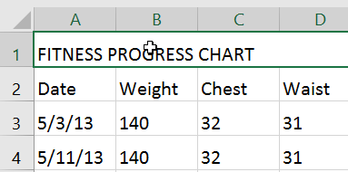
2. Trên tabTrang chủ, nhấp vàomũi tên thả xuốngbên cạnh lệnhCỡ chữ, sau đó chọncỡ chữmong muốn. Trong ví dụ của chúng tôi, chúng tôi sẽ chọn24để làm cho văn bảnlớn hơn.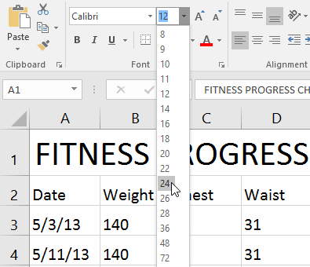
3. Văn bản sẽ thay đổi thànhcỡ chữ đã chọn.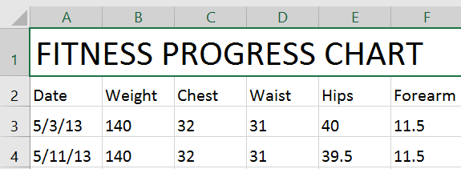
Bạn cũng có thể sử dụng lệnhTăng phông chữKích thướcvàGiảm phông chữKích thướchoặc nhậpcỡ phông chữ tùy chỉnhbằng bàn phím.
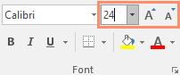
Để thay đổi phông chữ:
Theo mặc định, phông chữ của mỗi sổ làm việc mới được đặt thành Calibri. Tuy nhiên, Excel cung cấp nhiều phông chữ khác mà bạn có thể sử dụng để tùy chỉnh văn bản ô của mình. Trong ví dụ bên dưới, chúng tôi sẽ định dạngô tiêu đềđể giúp phân biệt nó với phần còn lại của trang tính.
- Chọn(các) ôbạn muốn sửa đổi.
 2. Trên tabTrang chủ, nhấp vàomũi tên thả xuốngbên cạnh lệnhPhông chữ, sau đó chọnphông chữmong muốn. Trong ví dụ của chúng tôi, chúng tôi sẽ chọnCentury Gothic.
2. Trên tabTrang chủ, nhấp vàomũi tên thả xuốngbên cạnh lệnhPhông chữ, sau đó chọnphông chữmong muốn. Trong ví dụ của chúng tôi, chúng tôi sẽ chọnCentury Gothic.
 3. Văn bản sẽ thay đổi thànhphông chữ đã chọn.
3. Văn bản sẽ thay đổi thànhphông chữ đã chọn.

Khi tạo sổ làm việc tại nơi làm việc, bạn sẽ muốn chọn phông chữ dễ đọc. Cùng với Calibri, các phông chữ đọc tiêu chuẩn bao gồm Cambria, Times New Roman và Arial.
Để thay đổi màu phông chữ:
- Chọn(các) ôbạn muốn sửa đổi.
 2. Trên tabTrang chủ, nhấp vàomũi tên thả xuốngbên cạnh lệnhMàu phông chữ, sau đó chọnphông chữmàumong muốn. Trong ví dụ của chúng tôi, chúng tôi sẽ chọnXanh.
2. Trên tabTrang chủ, nhấp vàomũi tên thả xuốngbên cạnh lệnhMàu phông chữ, sau đó chọnphông chữmàumong muốn. Trong ví dụ của chúng tôi, chúng tôi sẽ chọnXanh.
 3. Văn bản sẽ thay đổi thànhmàu phông chữ đã chọn.
3. Văn bản sẽ thay đổi thànhmàu phông chữ đã chọn.

ChọnMàu khácở cuối menu để truy cập các tùy chọn màu bổ sung. Chúng tôi đã thay đổi màu phông chữ thành màu hồng tươi.
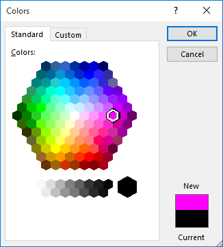
Để sử dụng các lệnh In đậm, Nghiêng và Gạch chân:
- Chọn(các) ôbạn muốn sửa đổi.
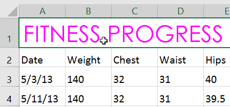
2. Bấm vào lệnh In đậm (B), Nghiêng (I) hoặc Gạch chân (U) trên tabTrang chủ. Trong ví dụ của chúng tôi, chúng tôi sẽ làm cho các ô được chọnđậm.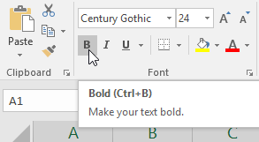
3. kiểu đã chọnsẽ được áp dụng cho văn bản.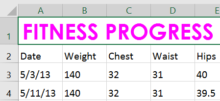
Bạn cũng có thể nhấnCtrl+Btrên bàn phím để tô đậmvăn bản đã chọn,Ctrl+Iđể áp dụngchữ in nghiêngvàCtrl+Uđể áp dụnggạch chân**.
Viền ô và tô màu
Đường viền ôvàtô màucho phép bạn tạo ranh giới rõ ràng và xác định cho các phần khác nhau trong trang tính của mình. Dưới đây, chúng tôi sẽ thêm đường viền ô và tô màu choô tiêu đềđể giúp phân biệt chúng với phần còn lại của trang tính.
Để thêm màu tô:
- Chọn(các) ôbạn muốn sửa đổi.
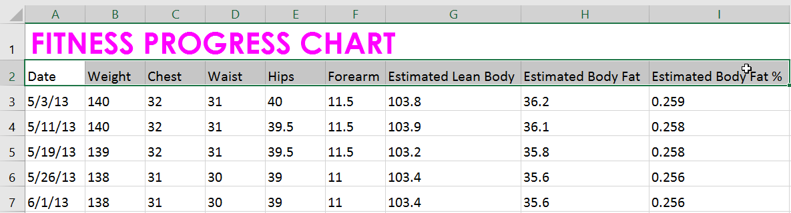
2. Trên tabTrang chủ, nhấp vàomũi tên thả xuốngbên cạnh lệnhTô màu, sau đó chọnmàu tôbạn muốn sử dụng. Trong ví dụ của chúng tôi, chúng tôi sẽ chọn màu xám đậm.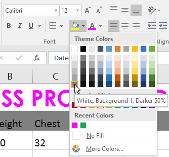
3. Màu tô đã chọnsẽ xuất hiện trong các ô đã chọn. Chúng tôi cũng đã thay đổimàu phông chữthànhmàu trắngđể dễ đọc hơn với màu tô tối này.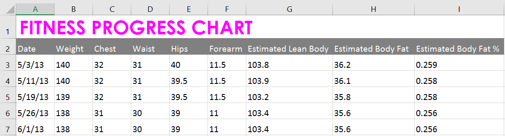
Để thêm đường viền:
- Chọn(các) ôbạn muốn sửa đổi.
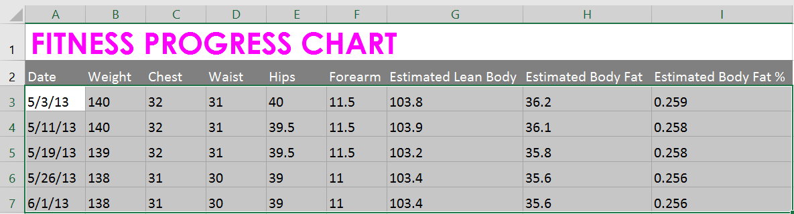
2. Trên tabTrang chủ, hãy nhấp vàomũi tên thả xuốngbên cạnh lệnhBiên giới, sau đó chọnviềnkiểubạn muốn sử dụng. Trong ví dụ của chúng tôi, chúng tôi sẽ chọn hiển thịTất cả các đường viền.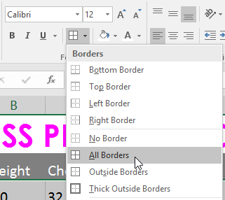
3. kiểu đường viền đã chọnsẽ xuất hiện.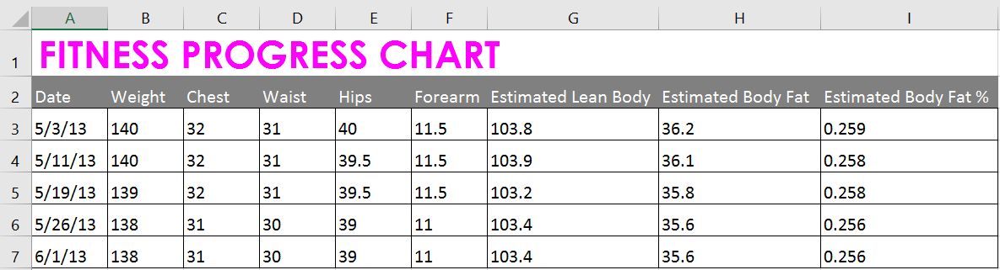
Bạn có thể vẽ đường viền và thay đổikiểu đườngvàmàucủa đường viền bằng công cụVẽ Đường viềnở cuối trình đơn thả xuống Đường viền.
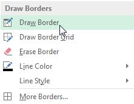
Kiểu ô
Thay vì định dạng ô theo cách thủ công, bạn có thể sử dụngkiểu ô được thiết kế sẵncủa Excel. Kiểu ô là cách nhanh chóng để đưa định dạng chuyên nghiệp vào các phần khác nhau trong sổ làm việc của bạn, nhưtiêu đềvàtiêu đề.
Để áp dụng kiểu ô:
Trong ví dụ của chúng tôi, chúng tôi sẽ áp dụng kiểu ô mới cho các ôtiêu đềvàtiêu đề****hiện có của chúng tôi.
- Chọn(các) ôbạn muốn sửa đổi.
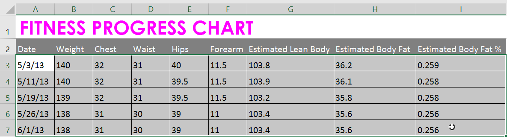
2. Nhấp vào lệnhkiểu ôtrên tabTrang chủ, sau đó chọnkiểu mong muốntừ trình đơn thả xuống.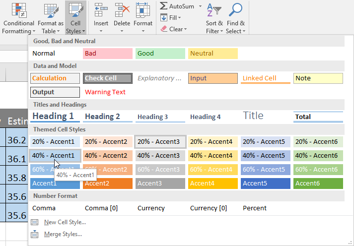
3. kiểu ô đã chọnsẽ xuất hiện.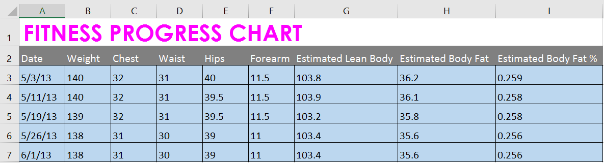
Việc áp dụng kiểu ô sẽthay thếmọi định dạng ô hiện có ngoại trừ việc căn chỉnh văn bản. Bạn có thể không muốn sử dụng kiểu ô nếu bạn đã thêm nhiều định dạng vào sổ làm việc của mình.
Căn chỉnh văn bản
Theo mặc định, mọi văn bản được nhập vào trang tính của bạn sẽ được căn chỉnh ở phía dưới bên trái của ô, trong khi mọi số sẽ được căn chỉnh ở phía dưới bên phải. Việc thay đổicăn chỉnhnội dung ô cho phép bạn chọn cách hiển thị nội dung trong bất kỳ ô nào, điều này có thể giúp nội dung ô của bạn dễ đọc hơn.
Nhấp vào mũi tên trong trình chiếu bên dưới để tìm hiểu thêm về các tùy chọn căn chỉnh văn bản khác nhau.

Left Align: Căn chỉnh nội dung theo viền trái của ô
* 
Căn giữa: Căn chỉnh nội dung một khoảng cách bằng nhau từ viền trái và phải của ô
* 
Căn lề phải: Căn chỉnh nội dung theo viền bên phải của ô
* 
Căn chỉnh trên cùng:Căn chỉnh nội dung theo đường viền trên cùng của ô
* 
Căn chỉnh giữa: Căn chỉnh nội dung một khoảng cách bằng nhau từ viền trên và viền dưới của ô
* 
Căn chỉnh đáy: Căn chỉnh nội dung theo viền dưới cùng của ô
Để thay đổi căn chỉnh văn bản theo chiều ngang:
Trong ví dụ bên dưới, chúng tôi sẽ sửa đổi cách căn chỉnh ôtiêu đềđể tạo giao diện bóng bẩy hơn và phân biệt rõ hơn với phần còn lại của trang tính.
- Chọn(các) ôbạn muốn sửa đổi.
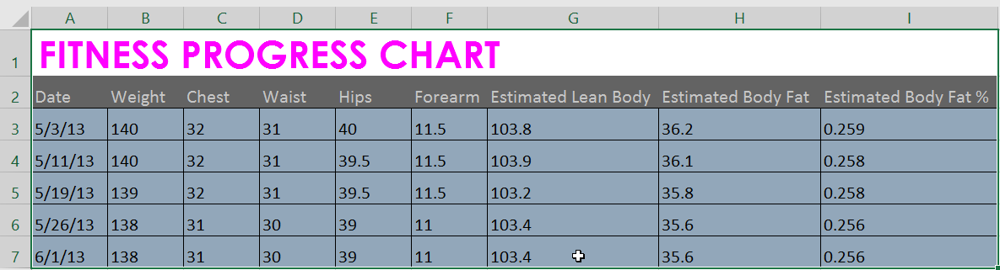
2. Chọn một trong ba lệnhcăn chỉnh ngangtrên tabTrang chủ. Trong ví dụ của chúng tôi, chúng tôi sẽ chọnCăn giữa.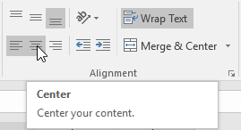
3. Văn bản sẽsắp xếp lại.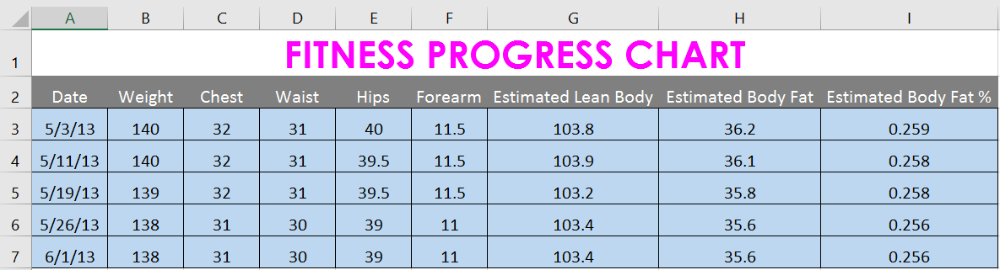
Để thay đổi căn chỉnh văn bản theo chiều dọc:
- Chọn(các) ôbạn muốn sửa đổi.
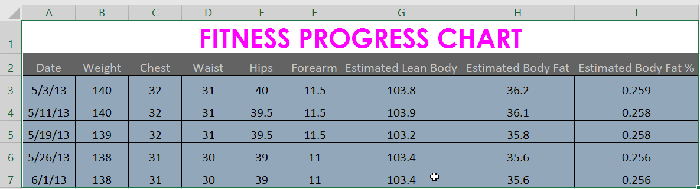
2. Chọn một trong ba lệnhcăn chỉnh dọctrên tabTrang chủ. Trong ví dụ của chúng tôi, chúng tôi sẽ chọnCăn chỉnh giữa.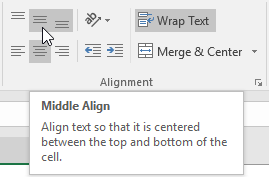
3. Văn bản sẽsắp xếp lại.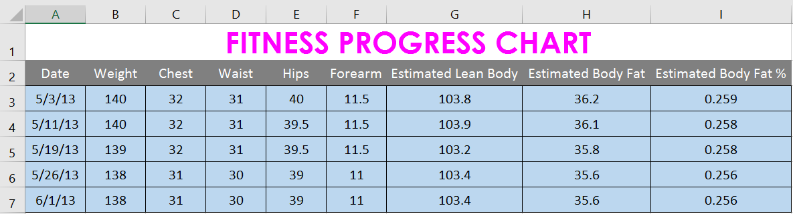
Bạn có thể áp dụngcảcài đặt căn chỉnh dọc và ngang cho bất kỳ ô nào.
Họa sĩ định dạng
Nếu bạn muốn sao chép định dạng từ ô này sang ô khác, bạn có thể sử dụng lệnhFormat Paintertrên tabHome. Khi bạn bấm vào Format Painter, nó sẽ sao chép tất cả định dạng từ ô đã chọn. Sau đó, bạn có thểnhấp và kéoqua bất kỳ ô nào mà bạn muốn dán định dạng.
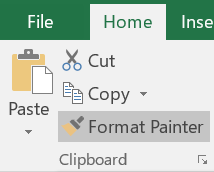
Xem video bên dưới để tìm hiểu hai cách khác nhau để sử dụng Format Painter.
Thử thách!
- Mở sổ làm việc thực hành của chúng tôi.
- Nhấp vào tab bảng tínhThử tháchở phía dưới bên trái của bảng tính.
- Thay đổikiểu ôtrong các ôA2:H2thànhDấu 3.
- Thay đổicỡ chữcủa hàng 1 thành36và cỡ chữ cho các hàng còn lại thành18.
- Đậmvàgạch chânvăn bản ở hàng 2.
- Thay đổi phông chữcủa hàng 1 thành phông chữ bạn chọn.
- Thay đổi phông chữcủa các hàng còn lại thành phông chữ khác mà bạn chọn.
- Thay đổimàu phông chữcủa hàng 1 thành màu bạn chọn.
- Chọn tất cả văn bản trong trang tính, sau đó thay đổicăn chỉnh ngangthành căn giữa vàcăn dọcthành căn giữa.
-
Khi bạn hoàn tất, bảng tính của bạn sẽ trông giống như thế này:

/en/excel/hiểu-số-định dạng/nội dung/